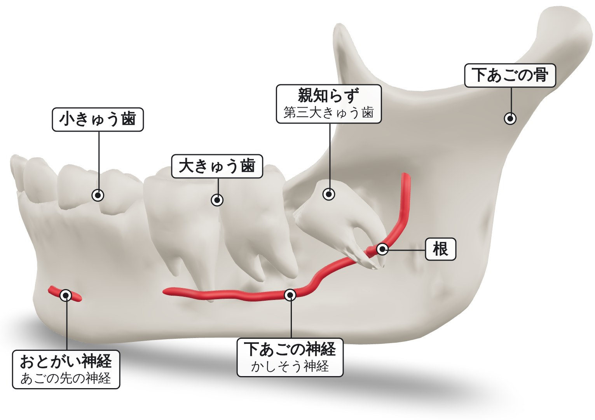
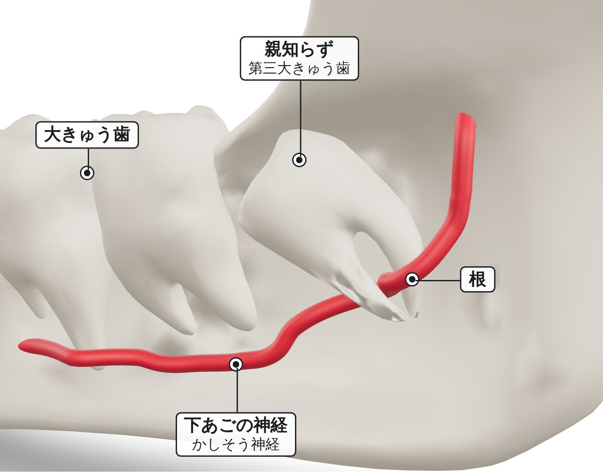

うまっている下の親知らずと、そのそばを通る神経
この親知らずの根は、神経に巻き付いています。歯をぬくと、神経が傷つき、くちびるやあごがしびれることがあります。




どんな状態ですか？
親知らずは、いちばんおくにある歯です。「第三大きゅう歯」ともよびます。うまっている下の親知らずは、歯ぐきと骨の下にあり、歯ぐきの上に出ていません。正しい向きに生えることができません。
神経について
下あごの骨の中には、細い管があり、その中を神経が通っています。ここでは「下あごの神経」とよびます。医学での名前は「かしそう神経」です。同じ管の中を、2本の血管（かしそう動脈とかしそう静脈）もいっしょに通っています。1
下あごの神経は、同じ側の下の歯と歯ぐきの感覚を伝えています。2 あごの前の方で、この神経の枝が、骨の小さなあなから外に出ます。この枝を「おとがい神経」とよびます。下くちびるとあごの感覚を伝えています。3
舌の感覚は、別の神経（舌神経）が伝えています。舌神経も、親知らずをぬくときに傷つくことがあります。4 舌神経の傷がずっと続くことはまれで、1000人に1〜3人ほどです。5 このモデルでは、舌神経は表していません。
このモデルでは、親知らずの根が、神経と動脈に巻き付いています。
歯をぬくと、なぜ神経が傷つくことがあるのですか？
歯をぬくには、根を骨から取り出す必要があります。根は、神経を囲むように曲がっています。そのため、根を取り出すときに、神経がおされたり、のびたり、切れたりすることがあります。いっしょに通る動脈や静脈が傷ついて、血が出ることもあります。1
下あごの神経が傷つくと、その枝のおとがい神経もうまく働かなくなることがあります。3
神経が傷つくと、どうなりますか？
同じ側の下くちびる、あご、歯、歯ぐきに、次のようなことが起こります。24

一時的な場合：感覚はもどります。多くは、数週間から数か月かかります。ずっと続く場合：感覚が完全にはもどりません。2
どのくらい起こりますか？
根が神経に近い親知らずについて、16の研究をまとめた報告があります。報告によって差がありますが、次のようになります。7
 100人中 約7人歯を全部ぬいた後に、神経が傷つくかもしれない
100人中 約7人歯を全部ぬいた後に、神経が傷つくかもしれない 100人中 約1人神経の傷が治らないかもしれない
100人中 約1人神経の傷が治らないかもしれない参考にした論文
- Juodzbalys G, Wang HL, Sabalys G. Anatomy of mandibular vital structures. Part I: mandibular canal and inferior alveolar neurovascular bundle in relation with dental implantology. J Oral Maxillofac Res. 2010;1(1):e2. doi.org/10.5037/jomr.2010.1102
- Sarikov R, Juodzbalys G. Inferior alveolar nerve injury after mandibular third molar extraction: a literature review. J Oral Maxillofac Res. 2014;5(4):e1. doi.org/10.5037/jomr.2014.5401
- Juodzbalys G, Wang HL, Sabalys G. Anatomy of mandibular vital structures. Part II: mandibular incisive canal, mental foramen and associated neurovascular bundles in relation with dental implantology. J Oral Maxillofac Res. 2010;1(1):e3. doi.org/10.5037/jomr.2010.1103
- Renton T, Yilmaz Z. Profiling of patients presenting with posttraumatic neuropathy of the trigeminal nerve. J Orofac Pain. 2011;25(4):333-344. PMID 22247929. pubmed.ncbi.nlm.nih.gov/22247929
- Lee J, Feng B, Park JS, et al. Incidence of lingual nerve damage following surgical extraction of mandibular third molars with lingual flap retraction: a systematic review and meta-analysis. PLoS One. 2023;18(2):e0282185. doi.org/10.1371/journal.pone.0282185
- Queral-Godoy E, Valmaseda-Castellón E, Berini-Aytés L, et al. Incidence and evolution of inferior alveolar nerve lesions following lower third molar extraction. Oral Surg Oral Med Oral Pathol Oral Radiol Endod. 2005;99(3):259-264. doi.org/10.1016/j.tripleo.2004.06.001
- Rico-Barroso L, Barroso-Medel M, Gutiérrez-Pérez J, et al. Coronectomy as an alternative technique to complete extraction of mandibular third molars with risk of nerve injury. Med Oral Patol Oral Cir Bucal. 2026;31(1):e19-e30. doi.org/10.4317/medoral.27459
この資料は、名古屋大学の研究のためのものです。第2.2版（2026年10月21日）。